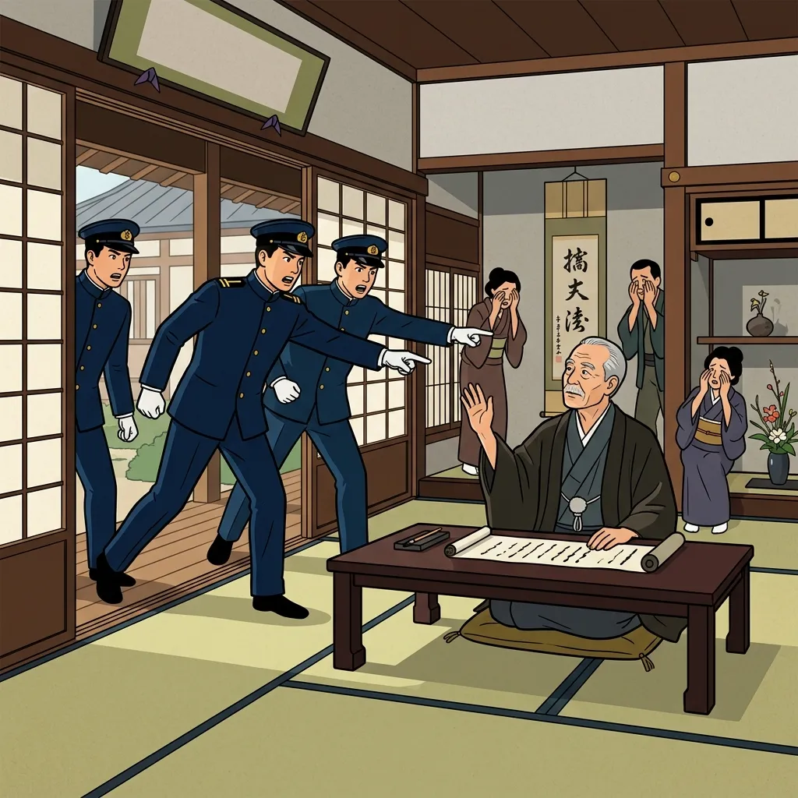

29. 世界恐慌と軍部の台頭
大正デモクラシーで日本が民主主義に向かう中、世界中をパニックに陥れた大恐慌が発生しました。経済の崩壊と人々の貧困は、日本を対外的な武力拡張へと駆り立て、国内では軍部が牙を剥くことになります。今回は、世界恐慌をめぐる各国の動きと、日本の運命を決定づけた「満州事変」、そして軍部が政治の実権を握っていく２つの暗殺事件を解説します！
1. 世界恐慌（せかいきょうこう）と各国の対策
1929年、アメリカ・ニューヨークの株式市場（ウォール街）での大暴落を発端に、世界中の会社が倒産し、失業者が溢れかえる大不況が起きました。これを世界恐慌（seかいきょうこう）と呼びます。
日本もこの大あおりを受け、深刻な昭和恐慌（しょうわきょうこう）が発生。多くの労働者が街に溢れ、東北地方の農村では娘が身売りされたり、小学校に通う子どもがまともにお弁当を食べられない欠食児童が出るほどの極限状態に陥りました。
| 国名 | 恐慌対策の名称 | 対策の具体的な内容 |
|---|---|---|
| アメリカ | ニューディール政策 | ルーズベルト大統領が実施。ダム建設などの大規模な公共事業で仕事を作り、失業者を救済しました。また、労働者の保護を進めました。 |
| イギリス・フランス | ブロック経済 | 自国と多くの植民地を一つの「ブロック（囲い込み）」とし、ブロック外からの輸入品に高い関税をかけて他国を締め出しました。 |
| ドイツ・イタリア | ファシズム（軍事独裁） | 植民地や資源が少ないため、ドイツはヒトラー、イタリアはムッソリーニといった独裁者が台頭。軍事力で他国に侵入して領土を広げようとしました。 |
2. 満州事変（まんしゅうじへん）と国際的孤立
日本もブロック経済や飢饉への対抗策として、中国の東北部（満州）を力ずくで手に入れようとしました。
① 満州事変（1931年）と「満州国」の建国
満州に駐留していた日本軍である関東軍は、1931年、柳条湖（りゅうじょうこ）付近で南満州鉄道の線路を自ら爆破しました（柳条湖事件）。関東軍はこれを「中国軍が爆破した」と言いがかりをつけ、直ちに満州全土を占領しました。これが満州事変です。
関東軍は、清の最後の皇帝であった溥儀（ふぎ）をトップ（執政）に立てて、日本の傀儡（かいらい、操り人形）国家である「満州国」の建国を勝手に宣言しました（1932年）。

図1：関東軍の謀略によって始まった「満州事変」における軍事侵攻のイメージ
② 国際連盟からの脱退（1933年）
中国の抗議を受けた国際連盟は、調査団（リットンの調査団）を派遣。連盟は日本の満州国建国を認めず、日本軍の撤退を求める勧告案を採択しました。
これに反発した日本は、1933年に全権代表の松岡洋右（まつおかようすけ）らが会議場を退場し、国際連盟からの脱退を表明しました。これにより、日本は世界の中で孤立した道を歩み始めました。
3. 国内の軍部の暴走と政党政治の終焉
国内では、恐慌による貧困や軍部の行動を抑え込もうとする政治家に対し、軍の若手将校たちが牙を剥きました。
① 五・一五事件（1932年5月15日）
海軍の青年将校らが首相官邸を襲撃し、満州国建国に慎重であった犬養毅（いぬかいつよし）首相を射殺しました。
※この事件により、大正末期から続いていた「政党の代表が首相になる政党内閣の時代」が完全に終わり（政党政治の崩壊）を迎え、これ以降は軍人が首相を務めるようになります。
② 二・二六事件（1936年2月26日）
陸軍の青年将校たちが約1400人の兵を率いて東京の中心部を占領し、高橋是清蔵相らの政府要人を次々と暗殺しました。この大反乱はのちに鎮圧されましたが、これ以降、軍部は「自分たちの意見を聞かないと、またこのような事件が起きる」と政府を脅し、発言力を急速に強めていきました。

図2：犬養毅首相が青年将校らに射殺された「五・一五事件」のイメージ
🔥 この単元のテスト対策・暗記のコツ
-
★
世界恐慌の各国の対応の対比（超重要！）：
・アメリカ：ニューディール政策（公共事業で仕事を増やす）
・イギリス・フランス：ブロック経済（植民地と囲い込んで高い関税）
・ドイツ・イタリア：ファシズム（軍事独裁による領土拡大） -
★
満州事変（1931年）と国際連盟脱退（1933年）：
・事変のきっかけ：関東軍が南満州鉄道を爆破した柳条湖事件。「いくさ始め（1931）に満州事変」と年号を覚えましょう。
・調査のために来日したのはリットンの調査団。
・国際連盟を脱退し、日本が国際的な孤立に陥ったのは1933年です。 -
★
五・一五事件（1932年）と二・二六事件（1936年）の区別：
・五・一五事件（1932年）：海軍将校、犬養毅首相暗殺。これにより政党政治が崩壊した歴史的意義がテストで問われます。
・二・二六事件（1936年）：陸軍将校、東京を占領。これにより軍部の暴走が決定づけられました。